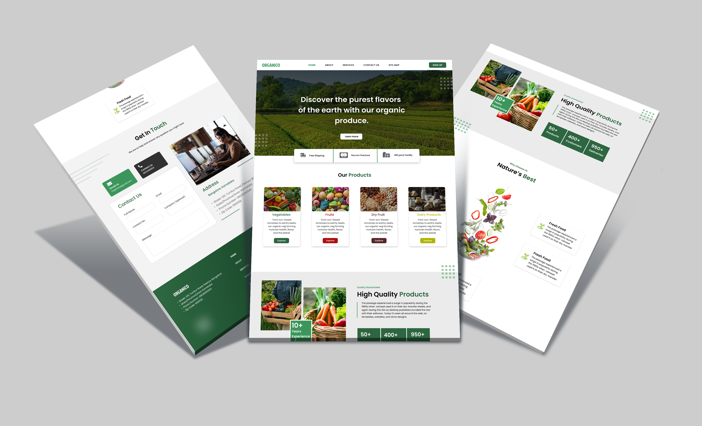

<div id="de_modal-content" class="container">
    <div class="row g-5">
        <div class="col-lg-8">
            <div class="row g-4">
                <div class="col-lg-12 item">
                    
                </div>
            </div>
        </div>

        <div class="col-lg-4 de_project-info">
            <h3>Organico Website</h3>
            <p>As a designer, I've crafted a captivating landing page in Figma for an organic farming website seller. The design harmonizes natural aesthetics with user-friendly elements to create an inviting and informative experience for visitors interested in organic produce.

                The landing page features a vibrant hero section adorned with lush imagery of organic farms and fresh produce, instantly evoking a sense of connection to nature. Thoughtfully selected typography and earthy color palettes enhance the organic theme while maintaining readability and visual appeal.
                
                Navigation is simplified with a clean and intuitive layout, guiding visitors seamlessly to key sections such as product offerings, farmer profiles, and ordering information. Strategic use of whitespace and visual hierarchy ensures that essential information stands out, encouraging exploration and engagement.
                
                Product Section showcase a diverse range of organic offerings, accompanied by detailed descriptions, nutritional facts, and pricing information. High-quality photography and subtle animations bring the products to life, fostering a sense of authenticity and trust.
                
                Integrated contact forms and call-to-action buttons prompt visitors to take the next step, whether it's placing an order, contacting a farmer directly, or subscribing to the newsletter for updates on seasonal offerings and promotions.
                
                Responsive design principles ensure optimal viewing experiences across all devices, from desktops to mobile phones, maintaining consistency in design and functionality. Delightful microinteractions and smooth transitions add a touch of sophistication, elevating the overall user experience.</p>
           
            <div class="de_project-details">
                <div class="d-field">
                    <i class="fa fa-file-text-o"></i>Type: <span>Branding</span>
                </div>
                <div class="d-field">
                    <i class="fa fa-calendar-o"></i>Year: <span>2023</span>
                </div>
            </div>
            <div class="spacer-30"></div>
        </div>
    </div>
</div>